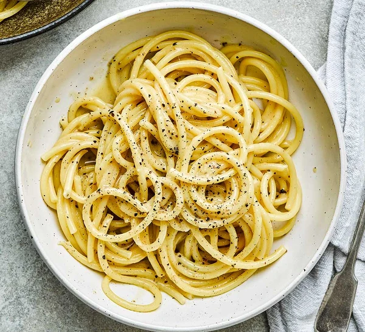

Cacio e Pepe

An Italian Dream
Cacio e pepe is a pasta dish from the cuisine of the city of Rome.
Cacio e pepe means "cheese and pepper" in several central Italian dialects.
In keeping with its name, the dish contains grated Pecorino Romano cheese
and black pepper, together with spaghetti, or traditionally tonnarelli.
Ingredients
- 200g bucatini or spaghetti
- 25g butter
- 2 tsp whole black peppercorns
- 50g pecorino or parmesan, finely grated
Method
- Cook the pasta for 2 mins less than pack instructions state, in salted
boiling water. Meanwhile, melt the butter in a medium frying pan over a low heat,
then add the ground black pepper and toast for a few minutes.
- Drain the pasta, keeping 200ml of the pasta water. Tip the pasta and 100ml of
the pasta water into the pan with the butter and pepper. Toss briefly, then scatter
over the parmesan evenly, but don’t stir – wait for the cheese to melt for 30 seconds,
then once melted, toss everything well, and stir together. This prevents the cheese
from clumping or going stringy and makes a smooth, shiny sauce. Add a splash more pasta
water if you need to, to loosen the sauce and coat the pasta. Serve immediately with a
good grating of black pepper.
Take me home